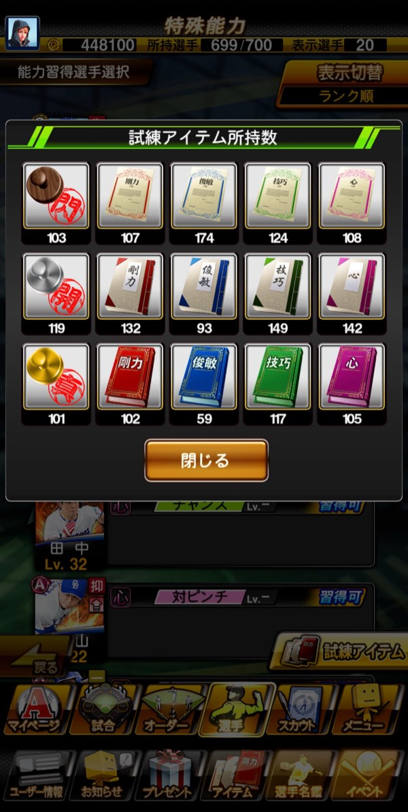

読み取り結果
1画像を選ぶ
アプリ内における「特殊能力 > 能力習得選手選択」画面のスクリーンショットを入力してください（上記スクリーンショット例参照）。複数枚まとめて選べます。
画像の読み取りでは、誤りが生じることがあります。読み取り結果は、表示される画像と見比べて確認してください。
2特能をあげる選手を選ぶ
読み取り結果が画像と違うときは、系統とLvを修正してください。
まだ選手がいません。スクリーンショットを選ぶか、手入力で追加してください。
3（任意）所持素材を入力する
この項目は任意です。入力すると過不足がわかります。「試練アイテム」ボタンで開く「試練アイテム所持数」画面のスクリーンショットからも読み取れます。入力した数はこの端末に保存されます。

画像の読み取りでは、数字を読み誤ることがあります。特に「0」「6」「9」は誤りやすいので、読み取り後は画像と見比べて確認してください。
あなたの所持素材
計算結果必要な素材
必要コイン 0 所持 0 過不足 0
上段が必要数、下段が過不足です。赤字は不足している数です。
動作確認機種
現在動作が確認できている端末は下記の通りです。
正常に動作しない場合は端末名をご連絡ください。
なお、正常に動作した端末で下記リストにない場合もご連絡いただけますと幸いです。
- iPhone 14 Pro
- iPhone 15
- iPhone 15 Pro
- iPhone 16
連絡先：X（@k_tatsu1367）
このツールについて
「プロ野球スピリッツA」の特殊能力は、Lvを上げるたびに、系統ごとの証・指南・極意書と、共通の閃きの印・開眼の印・真価の印、コインを使います。育成したい選手が複数人いる場合、どの素材があといくつ要るのかを数えるだけで手間がかかります。
このツールは、ゲームの「能力習得選手選択」画面のスクリーンショットから、選手ごとの能力の系統（剛力・俊敏・技巧・心）と現在のLvを読み取ります。上げたい選手を選ぶだけで、目標Lvまでに必要な素材とコインを系統ごとに合計し、所持素材との過不足を表示します。選手と能力を1つずつ手で入力する必要はありません。
- まとめて読み取りが可能：複数のスクリーンショットを一度に選べます。同じ選手が重複して写っていても、1人として数えます。
- 手動修正が可能：画像読み取りでは正しく読み取れない場合もあります。読み取った部分の画像と結果を並べて表示するので、見比べて手動で修正することができます。画像入力ではなく手動入力での追加もできます。
- 所持素材も画像から：「試練アイテム所持数」画面のスクリーンショットから、所持素材と所持コインを入力することもできます。現在の所持数から不足分を計算します。
- 画像は端末の中だけで処理：入力画像を外部に送ることはありません。